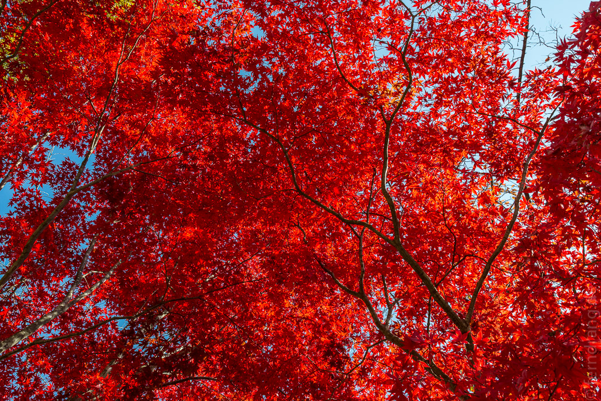
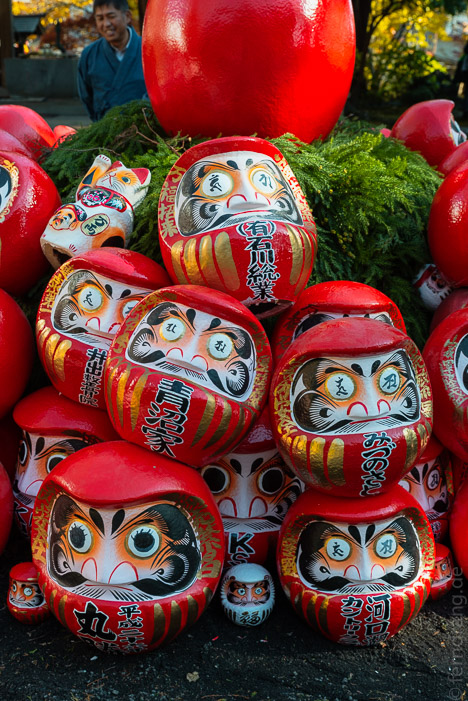

In der Nähe von Tokio liegt Japans heiß geliebter Berg Fuji. Wir haben einen Bus genommen, der direkt bei unserem Bahnhof Shinjuku abfuhr und uns nach anderthalb Stunden an der Autobahn im Kaff Shimoyoshida rausgeworfen hat. Dort liegt die kleine Chureito Pagode, die ein Postkartenmotiv vor der Kulisse des Mt. Fuji abgibt. Nach einem kurzen Spaziergang waren wir dort und konnten sehen, dass unsere Rechnung aufgegangen war. Die Ahorn-Bäume der Anlage strahlten in perfektem Rot. So konnten wir selber ein paar Postkarten mit Herbstlaub schießen.
Der Fuji ist ein unnatürlich glatter Kegel, wie ein Kind einen Vulkan malen würde. Das kommt besonders zur Geltung, weil der Berg frei steht. Ringsum gibt es nichts, was mehr als den Rang eines Hügels verdient hätte. Bei bestem Wetter und Sonnenschein hatten wir einen tollen Blick. Noch lag kein Schnee, so dass er keine weiße Kappe hatte, wie auf den Fuji-San-Souvenirs, die es in der Gegend in allen erdenklichen Formen gibt.
Im benachbarten Kawaguchi-ka haben wir den Nachmittag totgeschlagen. Bis auf einen Besuch in einem skurrilen Käsekuchen-Laden gab es nicht viel zu tun. Es gibt einen See, aber was nützt das, wenn die Tretbootsaison schon verbei ist? Leider waren wir auch zu faul für einen weiteren Fuji-Aussichtpunkt.
Dafür konnten wir uns ein Bild von der tristen Ausstrahlung japanischer Ortschaften machen, die nicht gerade Tokio sind. Während es dort eine Überfülle von schicken Läden und Cafés gibt, kann man auf dem Land noch ungestört tot über dem Zaun hängen.
Der Rückweg war ein ziemlicher Reinfall. Die Autobahn nach Tokio war derart dicht, dass wir für dieselbe Strecke fast fünf Stunden gebraucht haben. Im Nachhinein glauben wir, dass wir das Donald Trumps Besuch zu verdanken haben. Aber statt Rebellion und Ärger im Bus haben alle das Unausweichliche mit großer Langmut ertragen. Das haben sogar wir geschafft, weil wir zum ersten Mal seit Tagen entspannt sitzen und lesen konnten.